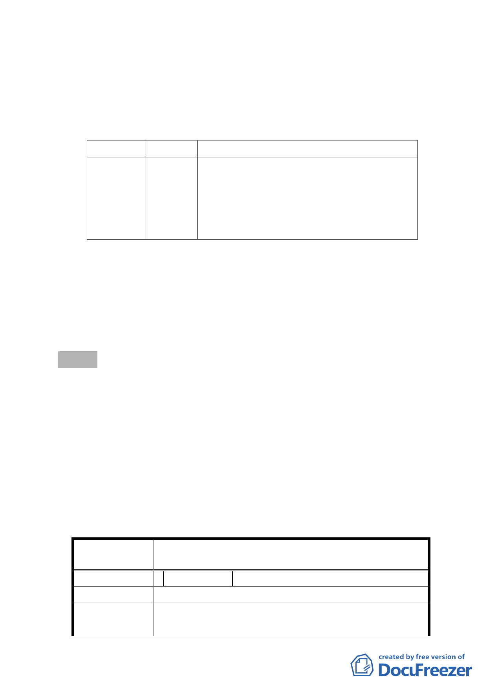

多劃屬商業區或為商業活動密集地帶，現有住宅區劃設所允
許之商業使用項目有必要酌予合理放寬，並透過都市計畫引
導地區商業活動發展軸線，將西門町及萬華車站周邊地區商
業活動加以連結，改善本地區住商混合使用、相互干擾之現
象，提高周邊住宅區生活水準及環境品質。
三、 變更細部計畫內容：
原計畫
住宅區
新計畫
商業區
變更理由
合理放寬本市中華路二段兩側住宅區商業
允許使用項目，提供附近地區商業活動需
求，引導地區商業活動發展，連接西門町
及萬華車站周邊商業活動，並改善住商混
合使用情形。
四、 全案係市府99年7月15日府都規字第09934135900號公告公開
展覽並函送到會。
五、 公民或團體所提意見：計1件。
六、 申請單位：臺北市政府。
七、 法令依據：都市計畫法第27條第1項第3款辦理。
決議：
一、本案主要計畫通過，未來則透過本案細部計畫變更、都市設
計及土地使用開發許可審議，於土地開發時依開發案對環境
的貢獻度，提供容積適度調整之機制，以引導都市發展。
二、建議市府都市發展局積極處理鐵路地下化沿線土地使用之調
整。
三、公民或團體陳情意見審決如後附綜理表。
臺北市都市計畫委員會公民或團體所提意見綜理表
案
名
變更臺北市中華路二段（愛國西路至汀洲路）
兩側住宅區為商業區主要計畫案
編 號 1 陳情人 蔡金龍
陳 情 位 置 萬華區和平西路二段 172 號
陳 情 理 由 1. 改為商業區是商一或商二、三、四？
2. 行業別放寬。
-2-